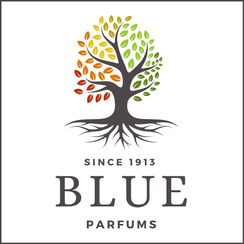

BLUE
La casa de la fragancia
BIENVENIDOS
En BLUE, encontrarás una gran variedad de fragancias masculinas realizadas con las mejores materias primas y por algunos de los mejores perfumistas del país.
Con más de 100 años de experiencia en el mercado, hemos construido una marca reconocida por ofrecer productos de alta calidad y prestigio.

Nuestro antiguo logotipo